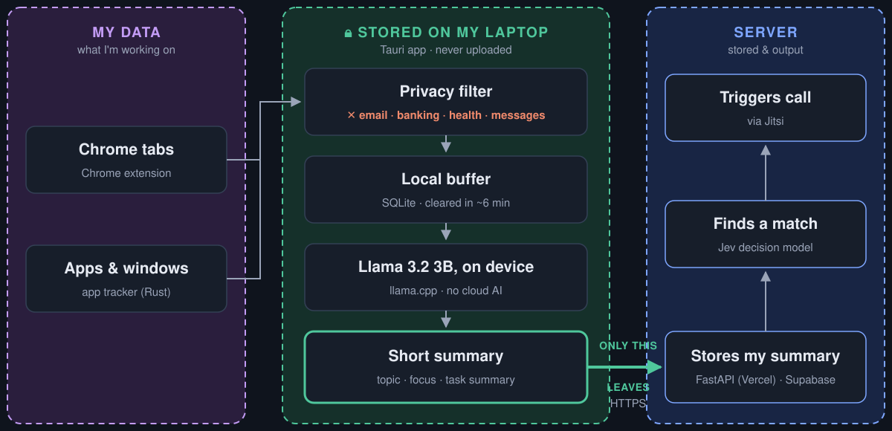

Your desktop notices what you're working on and finds someone doing it too.
Apple Silicon (M1 or newer) · Free · Install steps
Priya is also doing LeetCode right now. Want to work alongside her?
You do nothing extra. No posting, no searching, no scheduling.
TaskMatch sits in your menu bar and picks up what you're on: a LeetCode problem, job applications, a CS course.
Every few minutes it looks for someone working on the same thing at the same moment.
One low-pressure popup. If you both accept, a video call opens for the two of you.
Add each other, and TaskMatch tells you when they're working on that topic again.
A one-minute walkthrough of a real match.
Private pages and apps are filtered out first. Llama 3.2 runs on your Mac and turns the rest into one short sentence and a topic. That's all the server ever sees: no URLs, no page text, no titles.

About a minute. You don't need an account.
.dmg and drag the app into Applications.xattr -cr /Applications/work-match.app~/Library/Application Support/com.sultanalzoghaibi.workmatch/models/chrome://extensions, turn on Developer mode, click Load unpacked and pick the unzipped folder.